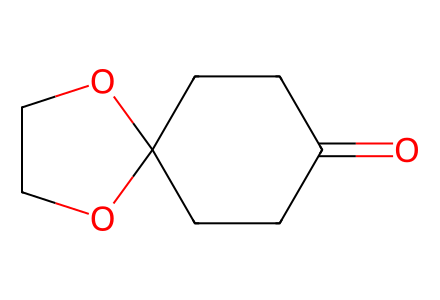
O=C1CCC2(CC1)OCCO2Complete forward Scheme 2 and SI preparations, including S1/S2 fragment, drawn crude diol9, alpha15 recycling and isolated dehydration product15prime. Racemic relative configuration is represented by one enantiomer; optimization-only conditions do not create new route branches. Facts compiled deterministically; independent review pending.
完整 JSON · 逐步 CSV · 路线序列 · SDF · HRMS 核对
| 事件 | 分子连接 | 报告产率 | Canonical reaction SMILES |
|---|---|---|---|
| E01 | 4 + cis-dichlorobutene → 5 | 5: 46% | ClC/C=C\CCl.O=C1CCC2(CC1)OCCO2>>O=C1[C@@H]2CC=CC[C@H]1CC1(C2)OCCO1 |
| E02 | 5 + TsNHNH2 → 6 | 6: 90% | Cc1ccc(S(=O)(=O)NN)cc1.O=C1[C@@H]2CC=CC[C@H]1CC1(C2)OCCO1>>Cc1ccc(S(=O)(=O)NN=C2[C@@H]3CC=CC[C@H]2CC2(C3)OCCO2)cc1 |
| E03 | 6 → 7 | 7: 64% | Cc1ccc(S(=O)(=O)NN=C2[C@@H]3CC=CC[C@H]2CC2(C3)OCCO2)cc1>>C1=CC[C@H]2C[C@@H](C1)CC1(C2)OCCO1 |
| E04 | 7 → 8 | 8: 98% | C1=CC[C@H]2C[C@@H](C1)CC1(C2)OCCO1>>O=C1C[C@H]2CC=CC[C@@H](C1)C2 |
| E05 | 8 → 9 | not reported | O=C1C[C@H]2CC=CC[C@@H](C1)C2>>O=C1C[C@@H]2C[C@H](C1)C[C@@H](O)[C@@H](O)C2 |
| E06 | 9 → 10 | 10: 68% | O=C1C[C@@H]2C[C@H](C1)C[C@@H](O)[C@@H](O)C2>>CC(C)(C)[Si](C)(C)O[C@H]1C[C@@H]2CC(=O)C[C@@H](C2)C[C@H]1O[Si](C)(C)C(C)(C)C |
| E07 | 10 → 11 | 11: 70% | CC(C)(C)[Si](C)(C)O[C@H]1C[C@@H]2CC(=O)C[C@@H](C2)C[C@H]1O[Si](C)(C)C(C)(C)C>>CC(C)(C)[Si](C)(C)O[C@H]1C[C@@H]2CC(=O)C=C(C2)C[C@H]1O[Si](C)(C)C(C)(C)C |
| F01 | dibromopropene + formaldehyde → S1 | S1: 79% | C=C(Br)CBr.C=O>>C=C(Br)CCO |
| F02 | S1 → S2 | S2: 95% | C=C(Br)CCO>>C=C(Br)CCO[Si](C)(C)C(C)(C)C |
| E08 | 11 + S2 → 12 | 12: 75% | C=C(Br)CCO[Si](C)(C)C(C)(C)C.CC(C)(C)[Si](C)(C)O[C@H]1C[C@@H]2CC(=O)C=C(C2)C[C@H]1O[Si](C)(C)C(C)(C)C>>C=C(CCO[Si](C)(C)C(C)(C)C)[C@@]12CC(=O)C[C@@H](C[C@H](O[Si](C)(C)C(C)(C)C)[C@H](O[Si](C)(C)C(C)(C)C)C1)C2 |
| E09 | 12 → 13 | 13: 90% | C=C(CCO[Si](C)(C)C(C)(C)C)[C@@]12CC(=O)C[C@@H](C[C@H](O[Si](C)(C)C(C)(C)C)[C@H](O[Si](C)(C)C(C)(C)C)C1)C2>>C=C(CCO)[C@@]12CC(=O)C[C@@H](C[C@H](O[Si](C)(C)C(C)(C)C)[C@H](O[Si](C)(C)C(C)(C)C)C1)C2 |
| E10 | 13 → 14 | 14: 90% | C=C(CCO)[C@@]12CC(=O)C[C@@H](C[C@H](O[Si](C)(C)C(C)(C)C)[C@H](O[Si](C)(C)C(C)(C)C)C1)C2>>C=C(CC=O)[C@@]12CC(=O)C[C@@H](C[C@H](O[Si](C)(C)C(C)(C)C)[C@H](O[Si](C)(C)C(C)(C)C)C1)C2 |
| E11 | 14 → beta15 + alpha15 + 15prime | beta15: 66%; alpha15: 15%; 15prime: 14% | C=C(CC=O)[C@@]12CC(=O)C[C@@H](C[C@H](O[Si](C)(C)C(C)(C)C)[C@H](O[Si](C)(C)C(C)(C)C)C1)C2>>C=C1C[C@@H](O)[C@@H]2C(=O)C[C@H]3C[C@H](O[Si](C)(C)C(C)(C)C)[C@H](O[Si](C)(C)C(C)(C)C)C[C@@]12C3.C=C1C[C@H](O)[C@@H]2C(=O)C[C@H]3C[C@H](O[Si](C)(C)C(C)(C)C)[C@H](O[Si](C)(C)C(C)(C)C)C[C@@]12C3.CC1=CC=C2C(=O)C[C@H]3C[C@H](O[Si](C)(C)C(C)(C)C)[C@H](O[Si](C)(C)C(C)(C)C)C[C@@]12C3 |
| R01 | alpha15 → beta15 | beta15: 58% | C=C1C[C@H](O)[C@@H]2C(=O)C[C@H]3C[C@H](O[Si](C)(C)C(C)(C)C)[C@H](O[Si](C)(C)C(C)(C)C)C[C@@]12C3>>C=C1C[C@@H](O)[C@@H]2C(=O)C[C@H]3C[C@H](O[Si](C)(C)C(C)(C)C)[C@H](O[Si](C)(C)C(C)(C)C)C[C@@]12C3 |
| E12 | beta15 + MeLi → 16 | 16: 45% | C=C1C[C@@H](O)[C@@H]2C(=O)C[C@H]3C[C@H](O[Si](C)(C)C(C)(C)C)[C@H](O[Si](C)(C)C(C)(C)C)C[C@@]12C3.[CH3-].[Li+]>>C=C1C[C@@H](O)[C@H]2[C@]13C[C@H](C[C@H](O[Si](C)(C)C(C)(C)C)[C@H](O[Si](C)(C)C(C)(C)C)C3)C[C@@]2(C)O |
| E13 | 16 → 17 | 17: 87% | C=C1C[C@@H](O)[C@H]2[C@]13C[C@H](C[C@H](O[Si](C)(C)C(C)(C)C)[C@H](O[Si](C)(C)C(C)(C)C)C3)C[C@@]2(C)O>>C[C@H]1C[C@@H](O)[C@H]2[C@]13C[C@H](C[C@H](O[Si](C)(C)C(C)(C)C)[C@H](O[Si](C)(C)C(C)(C)C)C3)C[C@@]2(C)O |
| E14 | 17 → 18 | 18: 80% | C[C@H]1C[C@@H](O)[C@H]2[C@]13C[C@H](C[C@H](O[Si](C)(C)C(C)(C)C)[C@H](O[Si](C)(C)C(C)(C)C)C3)C[C@@]2(C)O>>C[C@H]1C[C@@H](O)[C@H]2[C@]13C[C@H](C[C@H](O)[C@H](O)C3)C[C@@]2(C)O |
| E15 | 18 → 19 | 19: 85% | C[C@H]1C[C@@H](O)[C@H]2[C@]13C[C@H](C[C@H](O)[C@H](O)C3)C[C@@]2(C)O>>C[C@H]1C[C@@H](O)[C@H]2[C@@]13CC=C(C=O)[C@@H](C3)C[C@@]2(C)O |
| E16 | 19 → 1 | 1: 65% | C[C@H]1C[C@@H](O)[C@H]2[C@@]13CC=C(C=O)[C@@H](C3)C[C@@]2(C)O>>C[C@H]1C[C@@H](O)[C@H]2[C@@]13CC=C(CO)[C@@H](C3)C[C@@]2(C)O |
| E17 | 19 + bis-trimethylsilyl-ethanedithiol → 20 | 20: 58% | C[C@H]1C[C@@H](O)[C@H]2[C@@]13CC=C(C=O)[C@@H](C3)C[C@@]2(C)O.C[Si](C)(C)SCCS[Si](C)(C)C>>C[C@H]1C[C@@H](O)[C@H]2[C@@]13CC=C(C1SCCS1)[C@@H](C3)C[C@@]2(C)O |
| E18 | 20 → 2 | 2: 71% | C[C@H]1C[C@@H](O)[C@H]2[C@@]13CC=C(C1SCCS1)[C@@H](C3)C[C@@]2(C)O>>CC1=CC[C@]23C[C@H]1C[C@@](C)(O)[C@H]2[C@H](O)C[C@@H]3C |
| E19 | 2 + Ac2O → 3 | 3: 88% | CC(=O)OC(C)=O.CC1=CC[C@]23C[C@H]1C[C@@](C)(O)[C@H]2[C@H](O)C[C@@H]3C>>CC(=O)O[C@@H]1C[C@H](C)[C@@]23CC=C(C)[C@@H](C2)C[C@@](C)(O)[C@@H]13 |

O=C1CCC2(CC1)OCCO2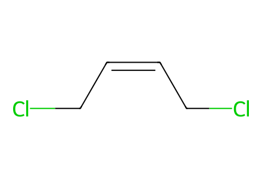
ClC/C=C\CCl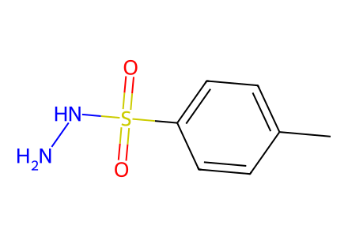
Cc1ccc(S(=O)(=O)NN)cc1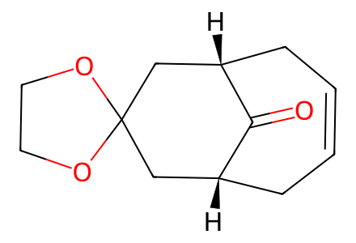
O=C1[C@@H]2CC=CC[C@H]1CC1(C2)OCCO1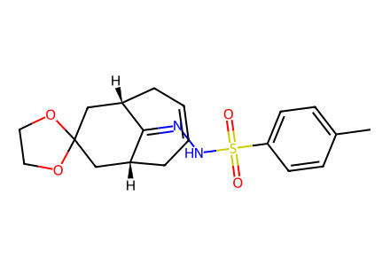
Cc1ccc(S(=O)(=O)NN=C2[C@@H]3CC=CC[C@H]2CC2(C3)OCCO2)cc1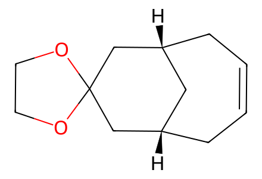
C1=CC[C@H]2C[C@@H](C1)CC1(C2)OCCO1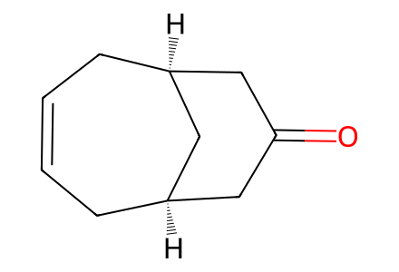
O=C1C[C@H]2CC=CC[C@@H](C1)C2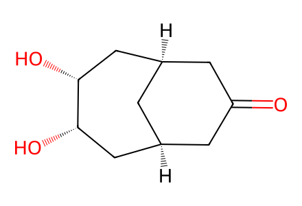
O=C1C[C@@H]2C[C@H](C1)C[C@@H](O)[C@@H](O)C2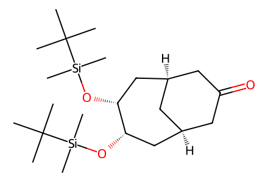
CC(C)(C)[Si](C)(C)O[C@H]1C[C@@H]2CC(=O)C[C@@H](C2)C[C@H]1O[Si](C)(C)C(C)(C)C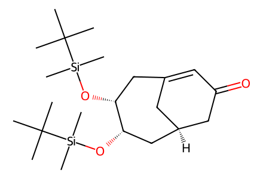
CC(C)(C)[Si](C)(C)O[C@H]1C[C@@H]2CC(=O)C=C(C2)C[C@H]1O[Si](C)(C)C(C)(C)C
C=C(Br)CBr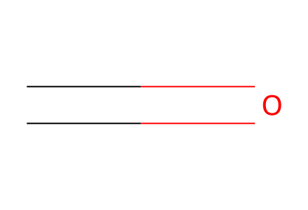
C=O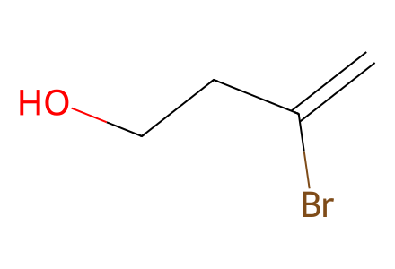
C=C(Br)CCO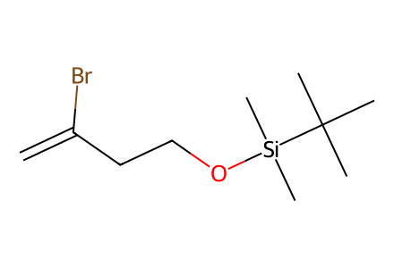
C=C(Br)CCO[Si](C)(C)C(C)(C)C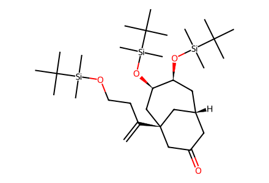
C=C(CCO[Si](C)(C)C(C)(C)C)[C@@]12CC(=O)C[C@@H](C[C@H](O[Si](C)(C)C(C)(C)C)[C@H](O[Si](C)(C)C(C)(C)C)C1)C2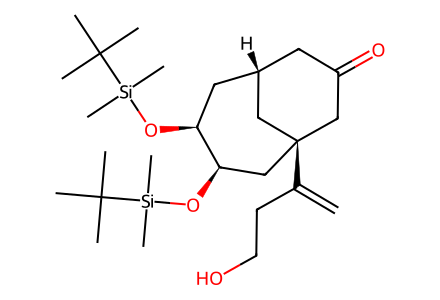
C=C(CCO)[C@@]12CC(=O)C[C@@H](C[C@H](O[Si](C)(C)C(C)(C)C)[C@H](O[Si](C)(C)C(C)(C)C)C1)C2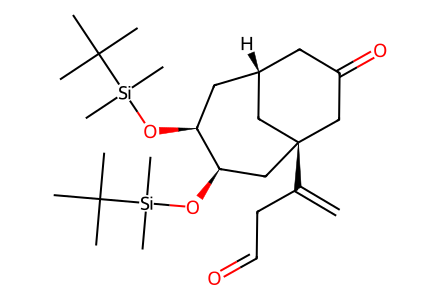
C=C(CC=O)[C@@]12CC(=O)C[C@@H](C[C@H](O[Si](C)(C)C(C)(C)C)[C@H](O[Si](C)(C)C(C)(C)C)C1)C2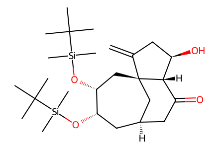
C=C1C[C@@H](O)[C@@H]2C(=O)C[C@H]3C[C@H](O[Si](C)(C)C(C)(C)C)[C@H](O[Si](C)(C)C(C)(C)C)C[C@@]12C3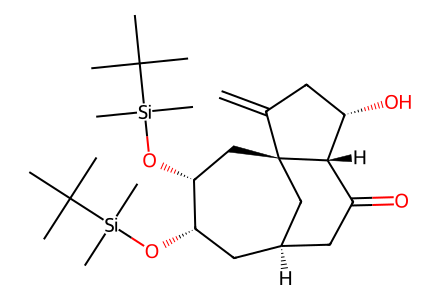
C=C1C[C@H](O)[C@@H]2C(=O)C[C@H]3C[C@H](O[Si](C)(C)C(C)(C)C)[C@H](O[Si](C)(C)C(C)(C)C)C[C@@]12C3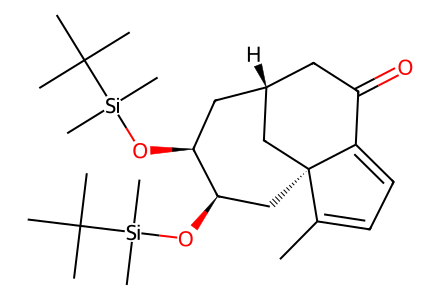
CC1=CC=C2C(=O)C[C@H]3C[C@H](O[Si](C)(C)C(C)(C)C)[C@H](O[Si](C)(C)C(C)(C)C)C[C@@]12C3C=C1C[C@@H](O)[C@H]2[C@]13C[C@H](C[C@H](O[Si](C)(C)C(C)(C)C)[C@H](O[Si](C)(C)C(C)(C)C)C3)C[C@@]2(C)O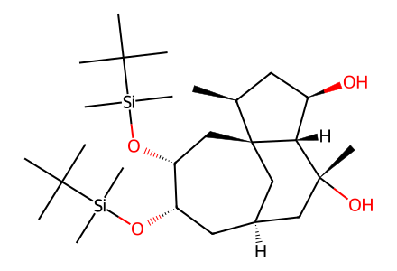
C[C@H]1C[C@@H](O)[C@H]2[C@]13C[C@H](C[C@H](O[Si](C)(C)C(C)(C)C)[C@H](O[Si](C)(C)C(C)(C)C)C3)C[C@@]2(C)O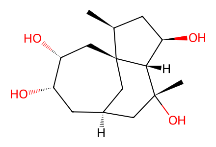
C[C@H]1C[C@@H](O)[C@H]2[C@]13C[C@H](C[C@H](O)[C@H](O)C3)C[C@@]2(C)O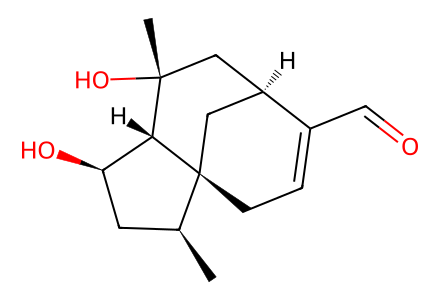
C[C@H]1C[C@@H](O)[C@H]2[C@@]13CC=C(C=O)[C@@H](C3)C[C@@]2(C)O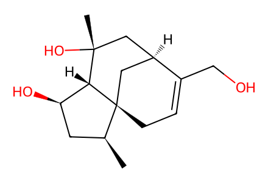
C[C@H]1C[C@@H](O)[C@H]2[C@@]13CC=C(CO)[C@@H](C3)C[C@@]2(C)O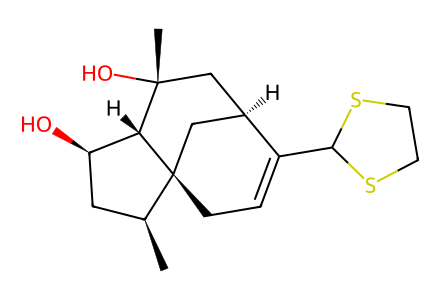
C[C@H]1C[C@@H](O)[C@H]2[C@@]13CC=C(C1SCCS1)[C@@H](C3)C[C@@]2(C)O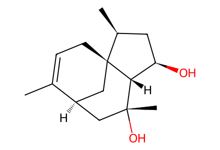
CC1=CC[C@]23C[C@H]1C[C@@](C)(O)[C@H]2[C@H](O)C[C@@H]3C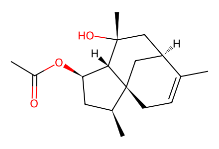
CC(=O)O[C@@H]1C[C@H](C)[C@@]23CC=C(C)[C@@H](C2)C[C@@](C)(O)[C@@H]13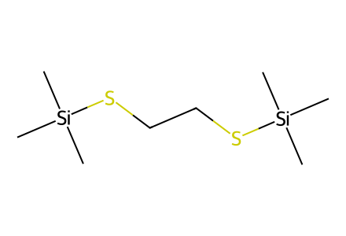
C[Si](C)(C)SCCS[Si](C)(C)C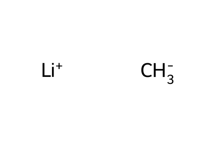
[CH3-].[Li+]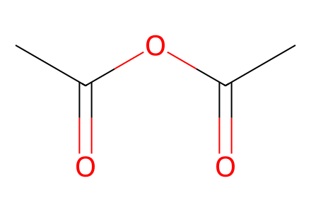
CC(=O)OC(C)=O